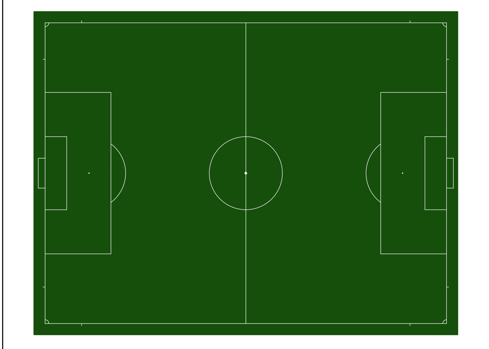
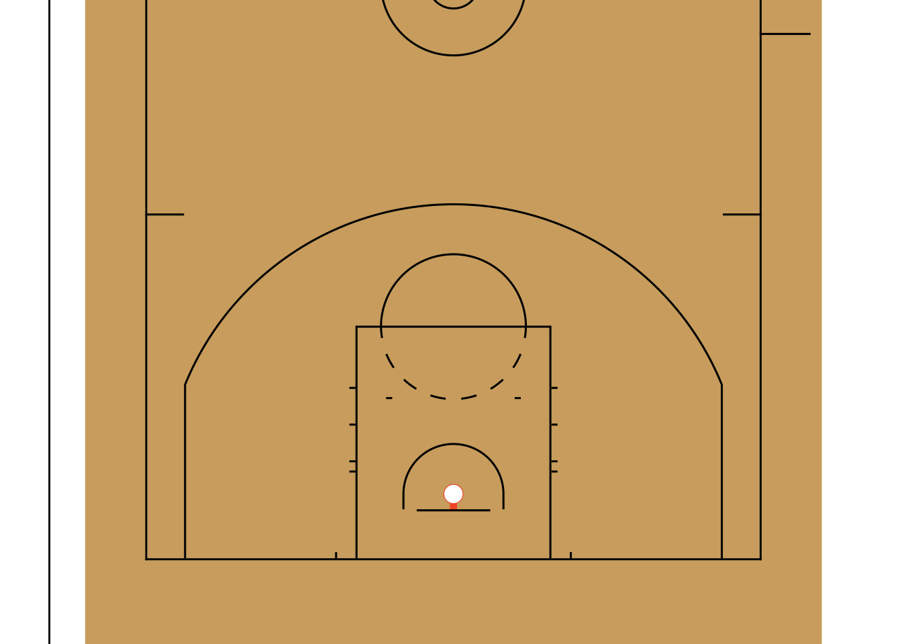
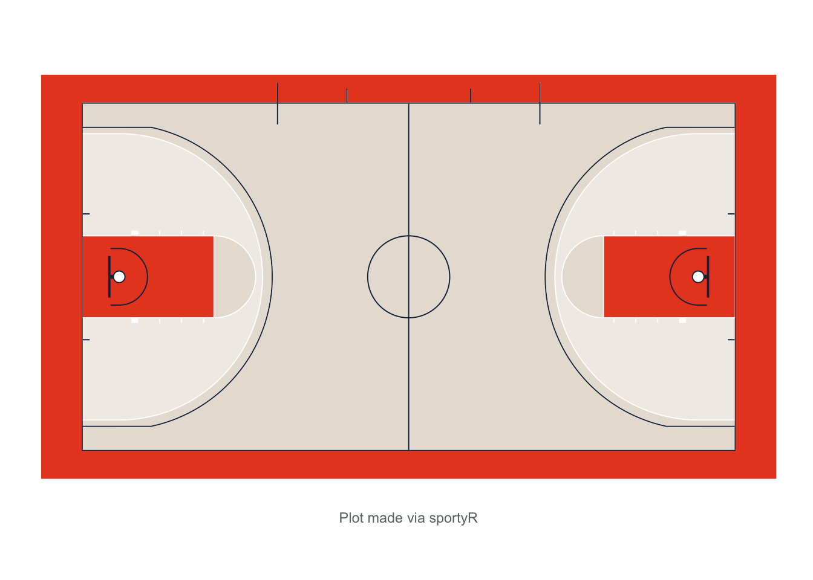
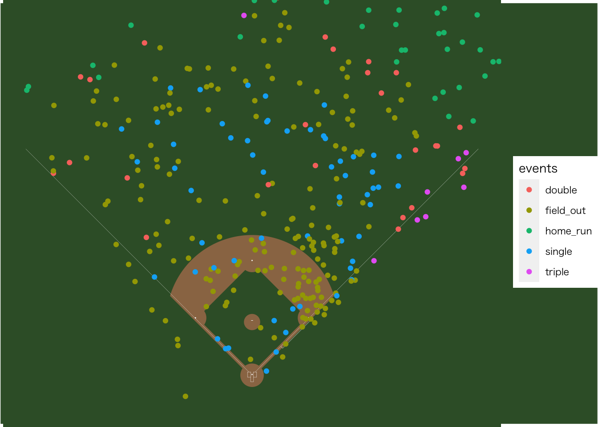

chapter: 3 Rを使ってみよう：四則演算から外部データの読み込みまで
3.1 基本的な計算
計算してみよう
# 足し算・引き算
1+1## [1] 23-1## [1] 2150-121## [1] 29# 記号「*」は掛け算を意味する
2*2## [1] 4# 割り算は「/」を用いる
10/5## [1] 2# 「^」はべき乗を意味する。
3^2## [1] 93^3## [1] 273^4## [1] 81# 「sqrt」で平方根が計算できる。
sqrt(100)## [1] 10sqrt(25)## [1] 5sqrt(8)## [1] 2.828427sqrt(2)## [1] 1.4142143.2 変数の定義
# 「<-」は代入操作を意味する
x<-4
2*x## [1] 8# ベクトルを代入
x<-1:10
print(x)## [1] 1 2 3 4 5 6 7 8 9 10# seq(a,b,c)：aからbまでをc刻みで生成
y<-seq(1,10,1)
print(y)## [1] 1 2 3 4 5 6 7 8 9 10z<-seq(1,10,2)
print(z)## [1] 1 3 5 7 9# 文字列の扱い
my_words<-c("Good morning", "Good afternoon", "Good evening")
print(my_words)## [1] "Good morning" "Good afternoon" "Good evening"First<-"Good"
Second<-c("mornig", "afternoon", "evening")
# デフォルトでは、スペースで接続
First_Second<-paste(First, Second)
print(First_Second)## [1] "Good mornig" "Good afternoon" "Good evening"# 接続の記号を変更
FSplus<-paste(First, Second,sep="+")
print(FSplus)## [1] "Good+mornig" "Good+afternoon" "Good+evening"3.3 データフレーム
上の例では、c()を使って、ベクトルとしてデータを扱う方法を確認しました。実際の分析では、ベクトルをいくつか集めたデータフレームを使って実証分析を行うことがほとんどです。以下では、ベクトルからデータフレームを作成する方法を示します。ただし、実際の分析では、ほとんどの場合、外部データ（行政が提供するエクセルファイルなど）から直接データフレームとして読み込みます。
# 日本の都道府県には固有の番号がある。
prefcode<-c(1,
2,3,4,5,6,7,
8,9,10,11,12,13,14,
15,16,17,18,
19,20,21,22,23,
24,25,26,27,28,29,30,
31,32,33,34,35,
36,37,38,39,
40,41,42,43,44,45,46,
47)
prefnameJ<-c("01北海道",
"02青森県","03岩手県","04宮城県","05秋田県",
"06山形県","07福島県",
"08茨城県","09栃木県","10群馬県","11埼玉県",
"12千葉県","13東京都","14神奈川県",
"15新潟県","16富山県","17石川県","18福井県",
"19山梨県","20長野県","21岐阜県","22静岡県",
"23愛知県",
"24三重県","25滋賀県","26京都府","27大阪府",
"28兵庫県","29奈良県","30和歌山県",
"31鳥取県","32島根県","33岡山県","34広島県",
"35山口県",
"36徳島県","37香川県","38愛媛県","39高知県",
"40福岡県","41佐賀県","42長崎県","43熊本県",
"44大分県","45宮崎県","46鹿児島県",
"47沖縄県")
print(prefnameJ)## [1] "01北海道" "02青森県" "03岩手県" "04宮城県" "05秋田県" "06山形県"
## [7] "07福島県" "08茨城県" "09栃木県" "10群馬県" "11埼玉県" "12千葉県"
## [13] "13東京都" "14神奈川県" "15新潟県" "16富山県" "17石川県" "18福井県"
## [19] "19山梨県" "20長野県" "21岐阜県" "22静岡県" "23愛知県" "24三重県"
## [25] "25滋賀県" "26京都府" "27大阪府" "28兵庫県" "29奈良県" "30和歌山県"
## [31] "31鳥取県" "32島根県" "33岡山県" "34広島県" "35山口県" "36徳島県"
## [37] "37香川県" "38愛媛県" "39高知県" "40福岡県" "41佐賀県" "42長崎県"
## [43] "43熊本県" "44大分県" "45宮崎県" "46鹿児島県" "47沖縄県"print(prefnameJ)で都道府県名を出力しています。ここで[1]はprefnameJというベクトルの中の第１要素を意味しています。出力が長い場合、改行されるごとに先頭の要素番号が出力されます。
# 以下のデータは
# 総務省「統計でみる都道府県のすがた2020」
# より抜粋している。
# 変数の対応関係
# A1101_総人口【人】
# B1101_総面積（北方地域及び竹島を除く）【ｈａ】
# D110101_市町村数【‐】
A1101<-c(5286000, #北海道
1263000,1241000,2316000,981000,1090000,1864000, #東北
2877000,1946000,1952000,7330000,6255000,13822000,9177000, #関東
2246000,1050000,1143000,774000, #新潟＋北陸
817000,2063000,1997000,3659000,7537000, #中部
1791000,1412000,2591000,8813000,5484000,1339000,935000, #近畿
560000,680000,1898000,2817000,1370000, #中国
736000,962000,1352000,706000, #四国
5107000,819000,1341000,1757000,1144000,1081000,1614000, #九州
1448000) #沖縄
B1101<-c(7842077,
964565,1527501,728223,1163752,932315,1378390,
609733,640809,636228,379775,515761,219396,241616,
1258423,424761,418605,419052,
446527,1356156,1062129,777735,517296,
577442,401738,461220,190529,840095,369094,472465,
350714,670807,711433,847961,611253,
414675,187678,567624,710363,
498651,244070,413090,740950,634073,773532,918702,
228105)
D110101<-c(179,
40,33,35,25,35,59,
44,25,35,63,54,62,33,
30,15,19,17,
27,77,42,35,54,
29,19,26,43,41,39,30,
19,19,27,23,19,
24,17,20,34,
60,20,21,45,18,26,43,
41)
testDB<-data.frame(cbind(prefcode,prefnameJ,A1101,B1101,D110101))
head(testDB)## prefcode prefnameJ A1101 B1101 D110101
## 1 1 01北海道 5286000 7842077 179
## 2 2 02青森県 1263000 964565 40
## 3 3 03岩手県 1241000 1527501 33
## 4 4 04宮城県 2316000 728223 35
## 5 5 05秋田県 981000 1163752 25
## 6 6 06山形県 1090000 932315 353.4 データの型
コンピュータが保存しているデータには、型があります。言語によっては事前にどの型で読み込むかを宣言する必要がありますが、Rは自動で判断します。
| 型 | 解説 |
|---|---|
| 数値型 | 整数だけでなく小数点を含む数も対象。一般の四則演算と同様にカッコ内は先に計算される。 |
| 文字列型 | 文字、特殊文字、数字を組み合わせた変数で、文字列型は四則演算は適用できない。文字列型であることを指定するためには、"(ダブルクオーテーション)で囲む。 |
| 論理型 | TRUE (真)とFALSE (偽)という２つの値をとる。ブーリアン型と呼ばれることもある。TRUEとFALSEは、TやFと省略の可能。 |
| 因子型 | 女性を0、男性を1とするなど、順序のない(=factor型)カテゴリカルデータを扱う場合に使用。 |
| 整数型 | 値を整数として扱うための型で、入力時に値の後ろにLをつける。 |
| 複素型 | 入力した値を複素数として扱うための型で、入力時に値の後ろにiをつける。 |
データを整理している途中で自分では意図せずともデータの型が変わってしまう場合があります。そのような場合はデータの型を変換する必要があります。
例えば、上の例で、A1101というベクトルは、数値型として読み込まれています。そのため、平均を計算することができます。
is.numeric(A1101)## [1] TRUEmean(A1101)## [1] 2690277ところが、データフレームとしてベクトルをまとめるステップで文字列データに変換されています。そのため、データフレームの中にあるA1101の平均が計算できません。
is.numeric(testDB$A1101)## [1] FALSEstr(testDB$A1101)## chr [1:47] "5286000" "1263000" "1241000" "2316000" "981000" "1090000" "1864000" ...mean(testDB$A1101)## Warning in mean.default(testDB$A1101): argument is not numeric or logical: returning NA## [1] NAchrという記号が文字列型であることを示しています。そのため、データの型を文字列型から数値型に変換する必要があります。
testDB$A1101<-as.numeric(testDB$A1101)
mean(testDB$A1101)## [1] 2690277また、データの尺度にもいくつか種類があります。以下の表はこちらから引用しています (p114)。
| 尺度 | 例 | 適用可能な演算 |
|---|---|---|
| 名義尺度 | 果物、りんご、バナナ、オレンジなど | ==, != |
| 順序尺度 | ホテルのレーティング、５つ星、４つ星など | ==, != |
| 比率尺度 | 長さ、１インチ、1.5インチ、2インチなど | ==, !=, <,>,+,-,*,/ |
| 間隔尺度 | 日付、2012/05/15, 2015/04/17など | ==, !=, <,>,+,- |
3.5 パッケージの考え方
Rにはpackageという概念があります。プログラミング言語は様々な用途が想定されています。学術研究に限っても、経済学で使用する内容と工学系あるいは医学系で利用する内容は大きく異なります。これらの用途全てに対応するようにR本体を備えてしまうとリソースの無駄が生じます。そのため、Rでは、R本体の機能を最小限に制限し、自身の目的に合わせて必要な道具を付け足していく方式をとっています。その付け足す道具をpackageと呼んでいます。
packageは一回だけインストールする必要があります。インストールはインターネットを使用しておこないますので、インターネットに接続していることが必要です。そして、インストール済みのpackageでも使用する際は毎回呼び出す必要があります。この呼び出しは自身の端末の中にあるものを呼び出すので、インターネット接続は不要です。
文房具に例えると、水彩画を描くために絵の具が必要なので、絵の具を文具店に買いにいくことがインストールです。いざ、今から絵の具を使って絵を描くぞ、というタイミングで絵の具をパレットの上に広げることが「呼び出し」です。
以下では、例として、こちらから各種スポーツのフィールドやコートを描くpackageをインストールして、実際に描画するデモを示したいと思います。
# packageのインストールコマンド
# 以下でsportyRというpackageをインストールしている
#install.packages('sportyR')
# インストールしていても「呼び出し」を行わないとエラーになる。
#geom_basketball('nba', full_surf = FALSE, rotate = TRUE)# 以下のコマンドでsportRを呼び出す
library(sportyR)
# Create a 100m by 75m FIFA pitch
geom_soccer('fifa', touchline_length = 100, goal_line_length = 75)
geom_basketball('nba', full_surf = FALSE, rotate = TRUE)
バスケのコートをNCAA版に変更して、色も若干アレンジした場合。
# Create a totally customized NCAA basketball court
geom_basketball(
'ncaa',
court_background_color = '#e8e0d7',
center_circle_color = '#13294b',
division_line_color = '#13294b',
endline_color = '#13294b',
sideline_color = '#13294b',
team_bench_color = '#13294b',
substitution_area_color = '#13294b',
court_apron_color = '#e84a27',
m_three_point_line_color = '#13294b',
w_three_point_line_color = '#ffffff',
m_two_point_range_color = '#e8e0d7',
w_two_point_range_color = '#ffffff66',
amateur_free_throw_lane_color = '#ffffff',
amateur_painted_area_color = '#e84a27',
amateur_free_throw_lane_lines_color = '#ffffff',
free_throw_semi_circle_line_color = '#ffffff',
free_throw_semi_circle_fill_color = '#e8e0d7',
lower_defensive_box_color = '#13294b',
restricted_area_arc_color = '#13294b',
backboard_color = '#13294b',
basket_ring_color = '#13294b',
net_color = '#ffffff'
)
以下は、アイスホッケーのコートに、米プロアイスホッケー女子リーグ（NWHL）のミネソタ vs ボストンの試合のシュートが放たれた場所の位置情報をプロットしたもの。
注意：このpackageはグラフ作成の有名packageであるggplot2に依存しているので、以下のコマンドの実行には、ggplot2のインストールも必要です。
# インストールしていない場合、以下も実行
#install.packages("ggplot2")
library(ggplot2)
# Read data from the Big Data Cup
bdc_data = read.csv('https://raw.githubusercontent.com/bigdatacup/Big-Data-Cup-2021/main/hackathon_nwhl.csv')
# Change names of X.Coordinate and Y.coordinate to x and y respectively
names(bdc_data)[13:14] = c('x', 'y')
# Shift coordinates to fit on the rink
bdc_data = translate(bdc_data, translate_x = -100, translate_y = -42.5)
# Subset to only be shots from the game on 2021-01-23 between the Minnesota
# White Caps and Boston Pride
bdc_shots = bdc_data[(bdc_data$Event == 'Shot') &
(bdc_data$Home.Team == 'Minnesota Whitecaps') &
(bdc_data$game_date == '2021-01-23'), ]
# Separate shots by team
whitecaps_shots = bdc_shots[bdc_shots$Team == 'Minnesota Whitecaps', ]
pride_shots = bdc_shots[bdc_shots$Team == 'Boston Pride', ]
# Reflect the Boston Pride shots to make them appear on the other side of the
# ice
pride_shots = reflect(pride_shots, over_y = TRUE)
# Draw the rink
nwhl_rink = geom_hockey('nwhl')
# Add the shot locations
nwhl_rink +
geom_point(data = whitecaps_shots, aes(x, y), color = '#2251b8') +
geom_point(data = pride_shots, aes(x, y), color = '#fec52e')
3.6 外部ファイルの読み込み
では実際に外部ファイルを読み込んでみましょう。
ここではエクセルファイルの読み込みに、readxlというpackageを使用します。
# 一度だけインストールが必要
#install.packages("readxl")
# ライブラリコマンドでの読み込みは毎回必要
library(readxl)
# 変数の対応関係
# A1101_総人口【人】
# A1301_15歳未満人口【人】
# A1303_65歳以上人口【人】
# B1101_ 総面積（北方地域及び竹島を除く）【ｈａ】
# B1103_ 可住地面積【ｈａ】
# B4107_ 雪日数（年間）【日】
# B4108_ 日照時間（年間）【時間】
# D110101_市町村数【‐】
# E6102_大学数【校】
# E6302_大学学生数【人】
# F610201_超過実労働時間数（男）【時間】
# F610202_超過実労働時間数（女）【時間】
# H110202_空き家数【戸】
#自分のパソコンに保存してあるエクセルファイルを読み込む場合は、
#以下でディレクトリを変更して実行
#getwd() # 現在の作業ディレクトリを確認
#setwd("/users/yamamoto/R/ForTeaching") # 作業ディレクトリの変更
#ウェブサイトから直接ダウンロードする場合
url1<-"https://yamamoto-masashi.github.io/DSlec/20201028sample.xls"
download.file(url1,destfile="20201028sample.xls")
# エクセルファイルの読み込み
# ヘッダ部分を読み飛ばしている
# sheet=1を変更することで別のシートも読める
sampleDB<-readxl::read_excel("20201028sample.xls",skip=5,sheet=1)## New names:
## * `` -> ...1
## * `` -> ...2# 列１と列２の名前を変更している。
names(sampleDB)[1:2]<-c("prefcode","prefnameJ")
head(sampleDB)## # A tibble: 6 x 16
## prefcode prefnameJ A1101 A1301 A1303 B1101 B1103 B4107 B4108 D110101 E6102 E6302
## <dbl> <chr> <dbl> <dbl> <dbl> <dbl> <dbl> <dbl> <dbl> <dbl> <dbl> <dbl>
## 1 1 01北海道 5.29e6 577000 1.66e6 7.84e6 2.24e6 131 1742. 179 38 78122
## 2 2 02青森県 1.26e6 137000 4.12e5 9.65e5 3.23e5 117 1642 40 10 15196
## 3 3 03岩手県 1.24e6 140000 4.03e5 1.53e6 3.71e5 106 1778. 33 6 11373
## 4 4 04宮城県 2.32e6 276000 6.43e5 7.28e5 3.15e5 63 1998. 35 14 48623
## 5 5 05秋田県 9.81e5 98000 3.57e5 1.16e6 3.20e5 101 1526. 25 7 8947
## 6 6 06山形県 1.09e6 127000 3.58e5 9.32e5 2.88e5 89 1765 35 6 11609
## # … with 4 more variables: F610201 <dbl>, F610202 <dbl>, H110202 <dbl>, Kanto <dbl>表の変数名の下の<dbl>は変数が数値型であることを示しています。
# read_excel()関数で読み込んだ場合は、文字列になっていないので、平均が計算可能。
mean(sampleDB$A1101)## [1] 2690277